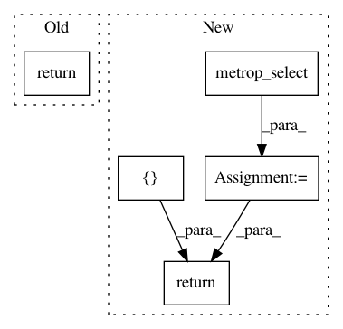

5d2767de3bbae72c7de7965f2afcb533df8e7ad3,pymc3/step_methods/metropolis.py,Metropolis,astep,#Metropolis#Any#,104
Before Change
self.steps_until_tune -= 1
return q_new
@staticmethod
def competence(var):
if var.dtype in pm.discrete_types:
After Change
q = floatX(q0 + delta)
accept = self.delta_logp(q, q0)
q_new = metrop_select(accept, q, q0)
if q_new is q:
self.accepted += 1
self.steps_until_tune -= 1
stats = {
"tune": self.tune,
"accept": np.exp(accept),
}
return q_new, [stats]
@staticmethod
def competence(var):
if var.dtype in pm.discrete_types:
In pattern: SUPERPATTERN
Frequency: 4
Non-data size: 5
Instances
Project Name: pymc-devs/pymc3
Commit Name: 5d2767de3bbae72c7de7965f2afcb533df8e7ad3
Time: 2017-02-05
Author: aseyboldt@users.noreply.github.com
File Name: pymc3/step_methods/metropolis.py
Class Name: Metropolis
Method Name: astep
Project Name: pymc-devs/pymc3
Commit Name: d3443536f3d4e39d5e0b8f90e1f9d0e25af77713
Time: 2013-05-06
Author: chris.fonnesbeck@vanderbilt.edu
File Name: pymc/step_methods/metropolis.py
Class Name: BinaryMetropolis
Method Name: astep
Project Name: pymc-devs/pymc3
Commit Name: 5d2767de3bbae72c7de7965f2afcb533df8e7ad3
Time: 2017-02-05
Author: aseyboldt@users.noreply.github.com
File Name: pymc3/step_methods/metropolis.py
Class Name: BinaryMetropolis
Method Name: astep
Project Name: pymc-devs/pymc3
Commit Name: 120e438fcd6357fc81a979d92b39b2bd7101dd34
Time: 2013-05-05
Author: chris.fonnesbeck@vanderbilt.edu
File Name: pymc/step_methods/metropolis.py
Class Name: BinaryMetropolis
Method Name: astep